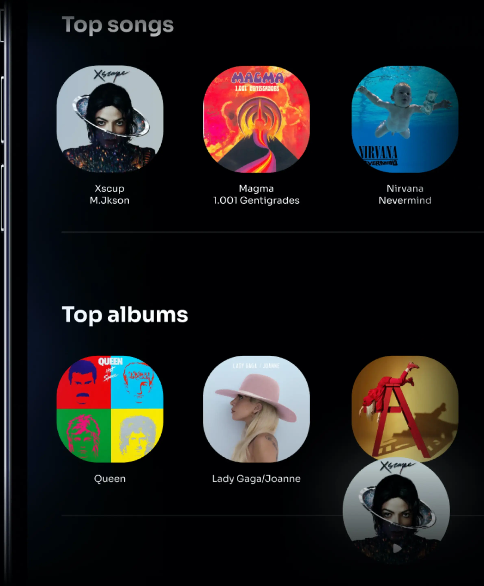
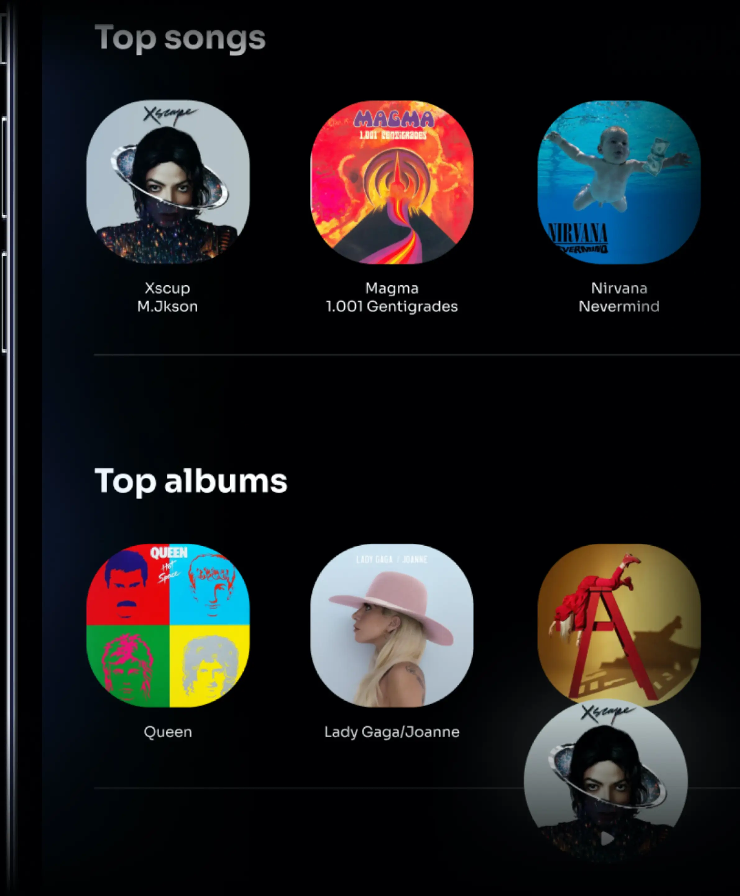

ALL YOUR FAVORITE SONGS IN CUSTOM PLAYLISTS
Helium gives users total freedom to personalize their playlists. Thanks to a user-friendly interface, music lovers can create unique playlists by freely choosing tracks, genres and playback order, putting music in their own hands.
 
